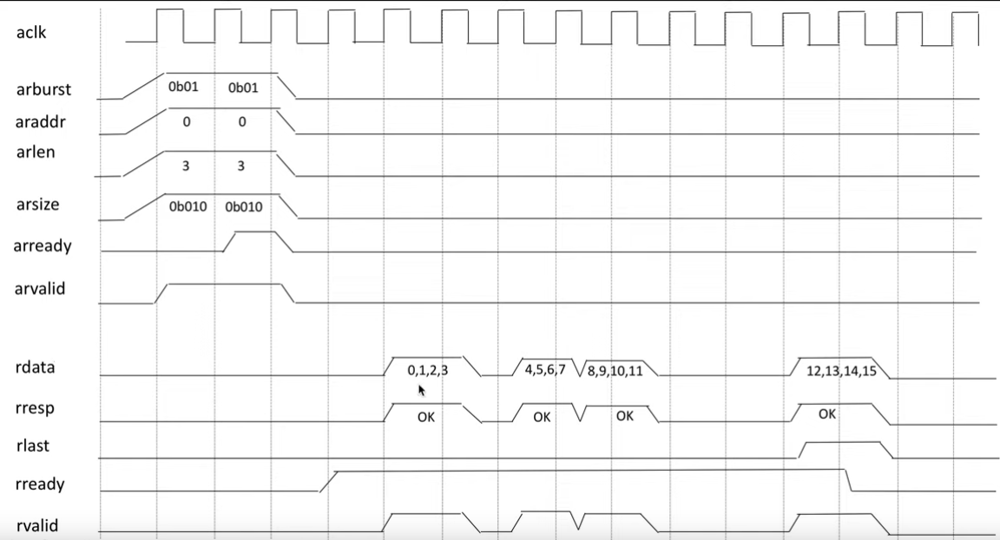
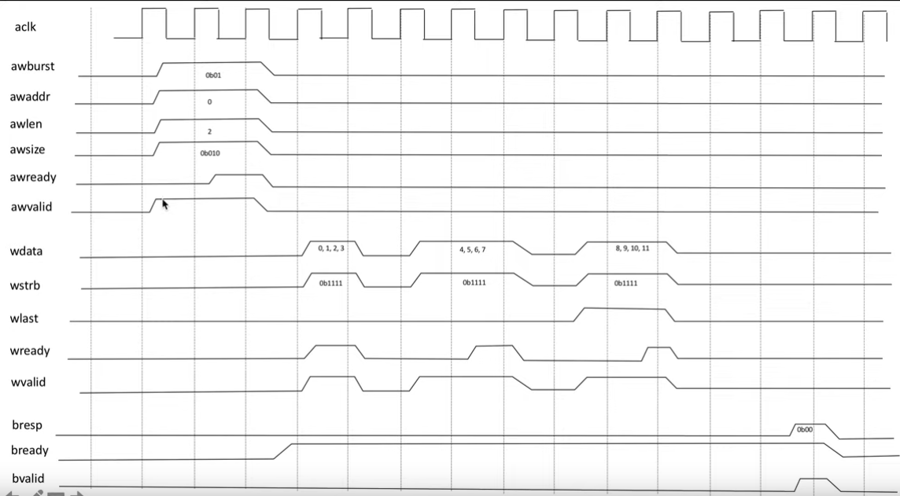

# Verilog Basic Notes
- Verilog Basic Notes
1. General Flow
1.1. Create Project
.v(sources).xdc(constraints)
1.2. RTL Analysis
Schematic
1.3. Simulate Design
_tb.v: test bench- simulation options: 500ns
- Scopes -> dut -> swt/led
- Schematic
1.4. Synthesize Design
Schematic
1.5. Implement Design
Schematic
1.6. Post-Implementation Timing Simulate Design
1.7. Generate Bitstream
1.8. Testing and Verification
low-level (circuit) simulation is much slower than high-level (C, HDL) simulation:
- check only functionality at high level (C, HDL)
- check only timing, power at low level (circuit)
module testbench();
reg clk, reset; // clock and reset are internal
reg a, b, c, yexpected; // values from testvectors
wire y; // output of circuit
reg [31:0] vectornum, errors; // bookkeeping variables
reg [3:0] testvectors[10000:0]; // array of testvectors
// instantiate device under test
sillyfunction dut(.a(a), .b(b), .c(c), .y(y) );
// generate clock
always // no sensitivity list, so it always executes
begin
clk = 1; #5; clk = 0; #5; // 10ns period
end
// at start of test, load vectors and pulse reset
initial // Only executes once
begin
$readmemb("example.tv", testvectors); // Read vectors: e.g 000_0 001_1 ... xxx_x
vectornum = 0; errors = 0; // Initialize
reset = 1; #27; reset = 0; // Apply reset wait
end
// Note: $readmemh reads testvector files written in
// hexadecimal
// apply test vectors on rising edge of clk
always @(posedge clk)
begin
#1; {a, b, c, yexpected} = testvectors[vectornum];
end
always @(negedge clk)
begin
if (~reset) // don’t test during reset
begin
if (y !== yexpected)
begin
$display("Error: inputs = %b", {a, b, c});
$display(" outputs = %b (%b exp)",y,yexpected);
errors = errors + 1;
end
// increment array index and read next testvector
vectornum = vectornum + 1;
if (testvectors[vectornum] === 4'bx)
begin
$display("%d tests completed with %d errors", vectornum, errors);
$finish; // End simulation
end
end
end
endmodule
2. Timing in Circuits
2.1. Combinational Circuit Timing
- contamination delay (
t_cd): minimum path in circuits, outputs start to change - propagation delay (
t_pd): maximum path in circuits, outputs complete change - (delay) heavy dependence on voltage and temperature
2.2. Sequential Circuit Timing
minimize clock skew time: requires intelligent clock network across a chip, making clock arrives at all locations at roughly the same time.
T_clock >= T_pcq + T_pd + (T_setup + T_skew)
T_ccq + T_cd > (T_hold + T_skew)
3. Key Words
module
input, output, inout
wire, reg, parameter
always@(), assign
posedge, negedge
if-else, case, begin ... end
port, signal
4. Module
- Inout(Net) -> (Net)Module(Net) -> Inout(Net)
- Input(Net/Register) -> (Net)Module(Net/Register) -> Output(Net)
module moduleName( In1, In2, Out1, Out2, InOut1);
// 输入输出定义: 说明端口是输入还是输出
input In1, In2;
output Out1, Out2;
inout InOut1;
// 数据类型定义: 说明端口数据类型 - Net/Register
wire In1, In2, Out1;
wire InOut1;
reg Out2;
// Instantiation of lower level modules
Design u_2(.(端口(信号1), .(端口2(信号2), .(端口3(信号3));
// Functionality
// 三种层次的描述: 逻辑层次(Gate Level), 数据流层次(Dataflow Level), 行为层次(Behavior Level)
// and/or - gate level
and and1( Out1, In1, In2);
// assign - dataflow level
assign #2 Out1 = In1 & In2;
// always/initial - behavior level
allways @(*)
begin
Out2 = In1 & In2
end
// Timing specification
endmodule
4.1. 外部端口
- 封装内部端口,装饰者模式
- 一个内部端口可与多个外部端口相连
module scram_b (
.data(arb),
.control(ctrl),
.mem_word(mem_blk),
.addr(byte)
);
input [0:3] arb;
input ctrl;
input [8:0] mem_blk;
output [0:3] byte;
endmodule
5. function
- 不含时间/事件控制
- 至少 1 个输入
- 至多 1 个输出
- 只含行为模块
- 只含阻塞赋值语句
function [7: 0] aligned_word; // function declaration
input [7: 0] word;
begin
aligned_word = word;
if (aligned_word != 0)
while (aligned_word[7] == 0) aligned_word = aligned_word << 1;
end
endfunction
module arithmetic_unit (result_1, result_2, operand_1, operand_2,);
output [4: 0] result_1;
output [3: 0] result_2;
input [3: 0] operand_1, operand_2;
assign result_1 = sum_of_operands (operand_1, operand_2);
assign result_2 = larger_operand (operand_1, operand_2);
function [4: 0] sum_of_operands(input [3:0] operand_1, operand_2);
sum_of_operands = operand_1 + operand_2;
endfunction
function [3: 0] larger_operand(input [3:0] operand_1, operand_2);
larger_operand = (operand_1 >= operand_2) ? operand_1 : operand_2;
endfunction
endmodule
5.1. task
将测试流程分为多个任务:
- 初始化任务
- 模拟生成任务
- 自我检查任务
module adder_task (c_out, sum, clk, reset, c_in, data_a, data_b);
output reg [3: 0] sum;
output reg c_out;
input [3: 0] data_a, data_b;
input clk, reset, c_in;
always @(posedge clk or posedge reset) begin
if (reset) {c_out, sum} <= 0;
else add_values (sum, c_out, data_a, data_b, c_in); // invoke task
end
task add_values; // task declaration
output reg [3: 0] SUM;
output reg C_OUT;
input [3: 0] DATA_A, DATA_B;
input C_IN;
{C_OUT, SUM} = DATA_A + (DATA_B + C_IN);
endtask
endmodule
常用的 task 有: $display("fmt", ...), $monitor("fmt", ...), $time, $finish
6. Variable/Data Structure
6.1. 常量
- 0: 逻辑 0
- 1: 逻辑 1
- x/X: Unknow/Floating
- z/Z: 高阻抗状态(High Impendence)
- parameter: #define
localparam idle = 2'b00;
parameter Bit = 8, cnt_up = 1'b1;
output [Bit - 1:0] A;
reg [Bit - 1:0] A;
A = A + cnt_up;
6.2. 向量
[MSB: LSB] 或 [LSB: MSB]
output [3:0] A; // 4 bit
reg [0:3] B, C; // 4 bit
wire [63:0] D; // 64 bit
wire E; // 1 bit
A[2:1] = B[0] & C[1:2]; // A[2] = 0 & C[1], A[1] = B[0] & C[2]
B[0:1] = 0;
C = 4'b1011; // C[0] = 1, C[1] = 0, C[2] = 1, C[3] = 1
integer [7:0] A [3:0]; // 4元素数组. 每个元素为16bit元
reg B [3:0] [15:0]; // arr[4][16]数组, 每个元素为1bit元
reg [7:0] C [3:0] [15:0]; // arr[4][16]数组, 每个元素为8bit元
A[3] = 0; // 置零A中第三个元素(8 bit)
A = 0; // 置零A
B[1][0] = 1; // B[1][0](1 bit)置1
C[0][0][3:0] = 4'b0010; // C[0][0] 低4bit为0010
C[2][8][5] = 1; // C[2][8] 第5bit为1
部分位选
vector[base_expr+: const_width];
vector[base_expr-: const_width];
inst_mode[mark+:2]; // => mark,mark+1
gpio_mode[mark-:4]; // => mark,mark-1,mark-2,mark-3
6.3. 数字
// size ' signed base value
<Bits长度>'[signed]<进制><数值>
- 位长不能用表达式表示,只可用固定的 parameter
Num = 5'b01101; // 二进制
Num = 22; // 十进制
Num = 12'b0000_1111_0000; // 可读性
Num = 4'hf; // 十六进制(1111)
Num = 4'bxxx1; // 前三位未知
Num = 4'bz01; // 前两位为z, 后两位为01
有符号数
- signed reg
- signed wire
- integer
- 'sxx
无符号数
- reg
- wire
- 'xx
6.4. Register - reg/integer/time/real/realtime
- 有记忆性
- 默认值: x
integer
长度为 32 Bit, 补码表示, 常用于计数器
always @(posedge CLK)
begin
integer i;
for (i = 0;i <= 7; i = i + 1) tmp[i] = In;
end
real
- real 默认值为 0,不可为 x/z
- 不可声明位宽
6.5. Net - wire/wand/wor
- 局部变量, 没有记忆性
- 默认值: z
- wire 间不可直接相连, wand/wor 间课直接相连
- 可用 wire 定义局部变量
7. Gate Level
7.1. Basic Gate
- and
- nand(与非)
- or
- nor(或非)
- xor(异或)
- xnor(同或)
7.2. Use Gate
- 同一模块中, 实例名不能与线网名相同
and (w1, In1, In2); // w1 = Int and In2
or or1(w2, w1, In2); // w2 = w1 or In2
xor xor(Out, w1, w2); // Out = w1 xor w2
- 实例数组
wire [3:0] irq, ctrl, sense;
/*
* =>
* nand
* u8nand3 (irq[3], ctrl[3], sense[3]);
* u8nand2 (irq[2], ctrl[2], sense[2]);
* u8nand1 (irq[1], ctrl[1], sense[1]);
* u8nand0 (irq[0], ctrl[0], sense[0]);
*/
nand u8nand [3:0] (irq, ctrl, sense);
parameter NUM_BITS = 4;
wire [NUM_BITS - 1 : 0] gated_d, din;
wire bypass;
and #(1, 2) u0and [NUM_BITS - 1: 0] (gated_d, din, bypass);
7.3. Self-Defined Gate(用户自定义原语)
- 可以有一个/多个输入
- 只能有一个输出
- 第一个端口必须是输出端口
-表示 值"无变化"
primitive XOR2 (DOUT, X1, X2);
input X1, X2;
output DOUT;
table // X1 X2 : DOUT
0 0 : 0;
0 1 : 1;
1 0 : 1;
1 1 : 0;
endtable
endprimitive
8. Dataflow Level
- assign net = net/reg: 左式只能是 net
8.1. Operators
赋值: <=, =
>, <, <=, >=
!=. ==
[ ]. { }
<<, >>
+, -, *, /, %
8.2. 整数提升
- 表达式所有中间取 最大位宽(最长(左/右)操作数)
{ }
可实现 haskell 中的模式匹配
// 连接运算符
A = { 1'b0, 1'b1}; // A = 2'b01
A = { B[1:0], C[0], D[2] }; // A = B[1], B[2], C[0], D[2]
A = { 2{2'b01} }; // A = 4'b0101
A = { 3'b101, 2{1'b0} }; // A = 5'b101_00
9. Behavior Level
- reg = net/reg: *左式只能是 reg
9.1. 时延控制
#num
parameter cycle = 30;
# 2
# cycle/2
9.2. 事件控制
@(*);
@( sel, a, b);
@(sel or a or b);
@(posedge CLK);
@(negedge CLK);
9.3. 语句内/间控制
q = @(posedge clk_iol) d; // 语句内事件控制
@(posedge clk_iol) // 语句间事件控制
q = temp;
9.4. always
always @(事件1, 事件2, ...)
begin
...;
end
9.5. if-else
- 必须添加 else
if (condition1)
begin
...;
end
else if (condition2)
begin
...;
end
else
begin
...;
end
9.6. case/casex/casez
- expr: 常量/变量/连接运算符{ }/x/z
- casex: 当输入某一位为 x/z 时，忽略此位匹配(恒将此位匹配为真)
- casez: 当输入某一位为 z 时，忽略此位匹配(恒将此位匹配为真)
case (expr)
item 1:
begin
...;
end
item 2:
begin
...;
end
item 3:
begin
...;
end
default:
...;
endcase
9.7. for
for (循环初值; 循环条件; 控制部分)
begin
...;
end
9.8. repeat loop
- initial for test bench
- 当需 if/else 进行断言时,注意 延时 造成的错误逻辑
// 重复事件控制:
// 先计算好右值, 等待时钟 tclk 上出现2个负跳变沿, 再把右值赋给 hresult
hresult = repeat (2) @(negedge tclk) hw_data + hr_data;
// repeat 循环语句:
repeat (2)
@(posedge tclk) hresult = hw_data + hr_data;
initial begin
inc_DAC = 1’b1;
repeat(4095) @(posedge clk); // bring DAC right up to point of rollover
inc_DAC = 1’b0;
inc_smpl = 1’b1;
repeat(7)@(posedge clk); // bring sample count up to 7
inc_smpl = 1’b0;
end
initial begin
#100 $finish; // run simulation for 100 units
end
9.9. forever loop
// $stop, $finish 可以终止 forevr loop
forever #10 clk = ~ clk;
9.10. force/release
initial
begin
force test_reset = penable & rtc_intr;
#5;
release test_reset;
end
9.11. Blocking/Non-Blocking
- Blocking(=): 顺序执行
- Non-Blocking(<=): 并行执行
output = input_logic;
output <= input_logic;
9.12. disable
begin : break
for (i = 0; i < n; i = i+1) begin : continue
@(posedge clk)
if (a == 0) // "continue" loop
disable continue;
if (a == b) // "break" from loop
disable break;
statement1
statement2
end
end
10. 结构建模
10.1. generate 语句
generate
for (gv_i = 0; gv_i < SIZE; gv_i = gv_i + 1)
begin: sblka
xor uxor (y[gv_i], a[gv_i], b[gv_i]);
end
endgenerate
// =>
// module.sblka[0].uxor
// module.sblka[1].uxor
// module.sblka[2].uxor
// ...
11. Delay(时延)
- 语句内时延
- 语句间时延
- 语句内时延期间：右值保持稳定不变，才可成功赋给左值
sum = (a ^ b) ^ cin;
#4 t1 = a & cin;
12. 预编译指令
12.1. define 宏
将多个 define 宏,放至 _defines.v, 作为全局宏
12.2. 默认未连接端口
`unconnected_drive pull1
// 此区间未连接输入端口为上拉(1)
`nounconnected_drive
`unconnected_drive pull0
// 此区间未连接输入端口为下拉(0)
`nounconnected_drive
13. Data Path
13.1. Multiplexer
13.2. Adder
13.3. Register
13.4. Memory
- 其中数据文件中地址必须在系统任务中定义的范围内，系统任务中定义的地址必须在存储器定义的地址范围内
- 优先考虑数据文件中的地址>系统任务中定义的起始地址和结束地址>存储器定义的起始地址和结束地址
14. Demos
14.1. Binary Multiplier
1100 (the multiplicand)
x 1011 (the multiplier)
----
0000 (initial partial product, start with 0000)
1100 (1st multiplier bit is 1, so add the multiplicand)
----
1100 (sum)
----
01100 (shift sum one position to the right)
1100 (2nd multiplier bit is 1, so add multiplicand again)
----
100100 (sum, with a carry generated on the left)
----
100100 (shift sum once to the right, including carry)
0100100 (3rd multiplier bit is 0, so skip add, shift once)
----
1100 (4th multiplier bit is 1, so add multiplicand again)
----
10000100 (sum, with a carry generated on the left)
10000100 (shift sum once to the right, including carry)
14.2. Multi-Hz
/*
* 利用计数器实现任意分频
*/
always @(posedge f_clk) begin
//设定频率控制字p
if (i == p) begin
i=0;
f_out=~f_out;
end
else begin
i=i+1;
end
end
15. Tips
15.1. 不可综合结构
- initial: 只用于 test bench
- events: Events 同步测试各个组件
- real: Real 数据类型不可综合
- time: Time 数据类型不可综合
- force/release
- assign(reg)/deassign(reg)
- fork join
- primitive: 只有门级的原语（primitives）可综合
- table: 用户自定义原语（UDP）及 table 不可综合
#1延迟只用于仿真，综合器直接忽略延迟
15.2. 混合编程
- 内部变量用 assign 赋值
- 输出变量通过监听 内部变量 改变输出值
assign DT0 = ...;
assign DT1 = ...;
always @(DT0) begin
Aout <= DT0;
end
always @(DT1) begin
Bout <= DT1;
end
15.3. 上升沿/下降沿
always @(posedge A or negedge B) begin
if (A) ...
else if (!B) ...
else ...
end
15.4. Parameter
- 只在定义的模块内部起作用
Overload Method
module data_path
#(parameter DATA_WIDTH = 8)
(
input A,
input [(DATA_WIDTH - 1): 0] B,
output [(DATA_WIDTH - 1): 0] C
);
......
endmodule
module data_path_tb
(
);
data_path #(.DATA_WIDTH(16)) DUT (.A(A), .B(B), .C(C));
......
endmodule
Constant Variable
reset_value = {{(DATA_WIDTH/2){1'b0}}, {(DATA_WIDTH/2){1'b1}}};
Test Bench
always begin
clk = 0;
forever #DELAY clk = ~clk;
end
reg clock;
integer no_of_clocks;
parameter CLOCK_PERIOD = 5;
parameter TIME = 50000;
initial no_of_clocks = 0;
initial clock = 1'b0;
always #(CLOCK_PERIOD/2.0) clock = ~clock;
always @(posedge clock)
no_of_clocks = no_of_clocks +1 ;
initial begin
#TIME;
$display("End of simulation time is %d ,
total number of clocks seen is %d expected is %d",$time,no_of_clocks,($time/5));
$finish;
end
16. 有限状态机(FSM)
- reset: initial state
- default: illegal/unreachable state
17. 算术状态机(ASM)
- state box: moore fsm
- conditional box: mealy fsm
- decision box:
x_input= 0/1
18. SystemVerilog
18.1. Enum
typedef enum logic [2:0] {
RED, GREEN, BLUE, CYAN, MAGENTA, YELLOW
} color_t;
color_t my_color = GREEN;
initial $display("The color is %s", my_color.name());
18.2. Struct and Union
typedef struct packed {
bit [10:0] expo;
bit sign;
bit [51:0] mant;
} FP;
FP zero = 64'b0;
18.3. Procedural Block
- always_comb: 用于组合逻辑电路（相当于 Verilog 中对所有输入变量电平敏感的 always，但 always_comb 无需手动列出所有输入变量，系统会自动识别）
- always_ff: 用于触发器及相关的时序逻辑电路（相当于 Verilog 中对某个或某几个信号有效跳变沿敏感、并带有信号储存特性的 always）
- always_latch: 用于锁存器级相关的时序逻辑电路（相当于 Verilog 中对某个或某几个信号电平敏感、并带有信号储存特性的的 always）
always_comb begin
tmp = b * b - 4 * a * c;
no_root = (tmp < 0);
end
always_ff @(posedge clk)
count <= count + 1;
always_latch
if (en) q <= d;
18.4. Interface
interface intf;
logic a;
logic b;
modport in (input a, output b);
modport out (input b, output a);
endinterface
module top;
intf i ();
u_a m1 (.i1(i));
u_b m2 (.i2(i));
endmodule
module u_a (intf.in i1);
endmodule
module u_b (intf.out i2);
endmodule
18.5. Testing
module top;
integer num_pkts = $random;
reg A, B, C, clk, reset_n;
wire D;
register_logic dut(A, B, C, clk, reset_n, D);
// generate clock
// ...
initial begin
run();
end
task run();
reset_n = 1;
#20 reset_n = 0;
@(posedge clk) reset_n <= #1 1;
repeat (num_pkts) begin
A = $random; B = $random; C = $random;
@(posedge clk);
$display(A, B, C, D);
end
$finish;
endtask
endmodule
class Packet;
string name;
rand bit[3:0] sa, da;
rand reg A, B, C;
function void display(result);
$display(A, B, C, result);
endfunction
endclass: Packet
// inheritance
class Packet_da_3 extends Packet;
constraint da_3 {
da == 3;
}
function void display(result);
super.display(result);
$display(sa, da);
endfunction
endclass: Packet_da_3
class Generator;
Packet pkt;
Channel out_chan;
int num_pkts;
function void gen();
pkt = new():
pkt.randomize();
out_chan.put(pkt);
endfunction
task run();
while (num_pkts-- != 0)
gen();
endtask
endclass
class Driver;
Channel in_chan;
task send();
in_chan.get(pkt);
top.A = pkt.A;
top.B = pkt.B;
top.C = pkt.C;
@(posedge top.clk);
endtask
task run();
forever send();
endtask
endclass
module top;
initial begin
build();
run();
end
task build();
Config cfg = new();
Channel chan = new();
Generator gen = new();
Driver drv = new();
gen.out_chan = chan;
drv.in_chan = chan;
cfg.randomize() with { num_pkts > 1500; }
gen.num_pkts = cfg.num_pkts;
endtask
task run();
fork
gen.run();
drv.run();
join
$finish;
endtask
endmodule
19. U280 Platform
-xp param (clock frequency etc.)
-R report level
-slr SLR region setting
-sp meomry resources mapping
tools:
- xbutil query
- platforminfo
- kernelinfo
- xclbinutil
- dmesg
19.1. Host Application
Basic Flow
- set the kernel arguments before performing any enqueue operation
- keeping the buffer size 2 MB ~ 4 GB
posix_memalignis used instead of malloc for the host memory space pointer
uint32_t *a, *b, *c, *d = NULL;
posix_memalign((void **)&a, 4096, BUFSIZE * sizeof(uint32_t));
posix_memalign((void **)&b, 4096, BUFSIZE * sizeof(uint32_t));
posix_memalign((void **)&c, 4096, BUFSIZE * sizeof(uint32_t));
posix_memalign((void **)&d, 4096, BUFSIZE * sizeof(uint32_t));
- release resources for proper performance profile report
clReleaseCommandQueue(Command_Queue);
clReleaseContext(Context);
clReleaseDevice(Target_Device_ID);
clReleaseKernel(Kernel);
clReleaseProgram(Program);
free(Platform_IDs);
free(Device_IDs);
TLP
It is advisable to use the posix_spawn() system call
to launch another process from the SDAccel environment application.
19.2. U280 Tools
GDB Based Debugging
xprint queue [<cl_command_queue>]
xprint event <cl_event>
xprint mem [<cl_mem>]
xprint kernel
xprint all
xstatus all
xstatus --<ipname>
xclbinutil
xclbinutil -i binary_container_1.xclbin --info
xocc xp flag
Checking out-of-bound access made by kernel interface buffers (option: address) and uninitialized memory access initiated by kernel local to kernel (option: memory).
xocc -l –t sw_emu --xp param:compiler.fsanitize=address -o bin_kernel.xclbin
xocc -l –t sw_emu --xp param:compiler.fsanitize=memory -o bin_kernel.xclbin
xocc -l –t sw_emu --xp param:compiler.fsanitize=address,memory -o bin_kernel.xclbin
xbutil
sudo /opt/xilinx/xrt/bin/xbutil flash -a <shell_name> # flash the firmware
sudo lspci -vd 10ee:
sudo /opt/xilinx/xrt/bin/xbutil flash scan
sudo /opt/xilinx/xrt/bin/xbutil validate -d <card_id>
xbutil program -p <xclbin>
xbutil query # check memory banks usage
xbutil status --lapc # check AXI violations
dmesg
ILA Trigger
- debug protocol hangs
- examine the burst size, pipelining and data width to locate the bottleneck
....
std::string binaryFile = xcl::find_binary_file(device_name,"vadd");
cl::Program::Binaries bins = xcl::import_binary_file(binaryFile);
devices.resize(1);
cl::Program program(context, devices, bins);
cl::Kernel krnl_vadd(program,"krnl_vadd_rtl");
// wait_for_enter("\nPress ENTER to continue after setting up ILA trigger...");
std::cout << "Pausing to arm ILA trigger. Hit enter here to resume host program..."
<< std::endl;
std::cin::get();
//Allocate Buffer in Global Memory
std::vector<cl::Memory> inBufVec, outBufVec;
cl::Buffer buffer_r1(context,CL_MEM_USE_HOST_PTR | CL_MEM_READ_ONLY,
vector_size_bytes, source_input1.data());
// ...
// ...
// ...
//Copy input data to device global memory
q.enqueueMigrateMemObjects(inBufVec,0/* 0 means from host*/);
//Set the Kernel Arguments
// ...
// ...
// ...
//Launch the Kernel
q.enqueueTask(krnl_vadd);
20. AXI Protocol
Advanced eXtensible Interface Protocol:
- handshake protocol: ready-valid protocol
20.1. AXI Channels
Read Address Channel
- arburst: burst type
- araddr: start address
- arlen: (# of transfers) - 1
- arsize: bytes/transfer
- arready (memory to host)
- arvalid
Read Data Channel
- rdata: data
- rresp: response (failure check)
- rlast: flag for last piece of data
- rready (host to memory)
- rvalid
Write Address Channel
- awburst: burst type
- awaddr: start address
- awlen: (# of transfers) - 1
- awsize: bytes/transfer
- awready (memory to host)
- awvalid
Write Data Channel
- wdata: data
- wstrb: write strobe -> write mask (1 bit mask for 1 byte data)
- wlast: flag for last piece of data
- wready (memory to host)
- wvalid
Write Response Channel
- bresp: response (failure check)
- bready (host to memory)
- bvalid
20.2. AXI Burst
| AxBURST[1:0] | Burst Type |
|---|---|
| 0b00 | FIXED |
| 0b01 | INCR |
| 0b10 | WRAP |
| 0b11 | Reserved |
burst length = AxLEN[7:0] + 1 (up to 256 transfers in each burst)
| AxSIZE[2:0] | Bytes in Transfer |
|---|---|
| 0b000 | 1 |
| 0b001 | 2 |
| 0b010 | 4 |
| 0b011 | 8 |
| 0b100 | 16 |
| 0b101 | 32 |
| 0b110 | 64 |
| 0b111 | 128 |
Read Burst

Write Burst

21. Verilog Components
21.1. Clock Unit
/**
* @module tick_divider
* @author sabertazimi
* @email sabertazimi@gmail.com
* @brief simple clock divider
* @param DATA_WIDTH data width
* @input clk_src clock signal
* @ouput clk_group divided clock signals
*/
module tick_divider
#(parameter DATA_WIDTH = 32)
(
input clk_src,
output reg [(DATA_WIDTH-1): 0] clk_group
);
initial begin
clk_group <= {(DATA_WIDTH){1'b0}};
end
always @(posedge clk_src) begin
clk_group <= clk_group + 1;
end
endmodule
21.2. Signal Unit
/**
* @module integer_to_segment
* @author sabertazimi
* @email sabertazimi@gmail.com
* @brief raw data to segment encoder
* @param DATA_WIDTH data width
* @input data raw decimal data (4 bit)
* @output seg_data bit data for cnodes
*/
module integer_to_segment
(
input [3:0] int_data,
output reg [7:0] seg_data
);
always @(int_data) begin
case (int_data)
4'b0000: seg_data <= 8'b11000000; // 0
4'b0001: seg_data <= 8'b11111001; // 1
4'b0010: seg_data <= 8'b10100100; // 2
4'b0011: seg_data <= 8'b10110000; // 3
4'b0100: seg_data <= 8'b10011001; // 4
4'b0101: seg_data <= 8'b10010010; // 5
4'b0110: seg_data <= 8'b10000010; // 6
4'b0111: seg_data <= 8'b11111000; // 7
4'b1000: seg_data <= 8'b10000000; // 8
4'b1001: seg_data <= 8'b10010000; // 9
4'b1010: seg_data <= 8'b10001000; // a
4'b1011: seg_data <= 8'b10000011; // b
4'b1100: seg_data <= 8'b11000110; // c
4'b1101: seg_data <= 8'b10100001; // d
4'b1110: seg_data <= 8'b10000110; // e
4'b1111: seg_data <= 8'b10001110; // f
default: seg_data <= 8'b11111111; // off
endcase
end
endmodule
/**
* @module data_to_segment
* @author sabertazimi
* @email sabertazimi@gmail.com
* @brief raw data to segment encoder
* @param DATA_WIDTH data width
* @input data raw decimal data
* @output seg_data bit data for cnodes
*/
module data_to_segment
#(parameter DATA_WIDTH = 32)
(
input [(DATA_WIDTH-1):0] data,
output [(DATA_WIDTH*2)-1:0] seg_data
);
integer_to_segment trans1 (
.int_data(data[3:0]),
.seg_data(seg_data[7:0])
);
integer_to_segment trans2 (
.int_data(data[7:4]),
.seg_data(seg_data[15:8])
);
integer_to_segment trans3 (
.int_data(data[11:8]),
.seg_data(seg_data[23:16])
);
integer_to_segment trans4 (
.int_data(data[15:12]),
.seg_data(seg_data[31:24])
);
integer_to_segment trans5 (
.int_data(data[19:16]),
.seg_data(seg_data[39:32])
);
integer_to_segment trans6 (
.int_data(data[23:20]),
.seg_data(seg_data[47:40])
);
integer_to_segment trans7 (
.int_data(data[27:24]),
.seg_data(seg_data[55:48])
);
integer_to_segment trans8 (
.int_data(data[31:28]),
.seg_data(seg_data[63:56])
);
endmodule
/**
* @module led_unit
* @author sabertazimi
* @email sabertazimi@gmail.com
* @brief led display module (bind to anodes and cnodes in FPGA)
* @param DATA_WIDTH data width
* @input clk_src clock signal (light different led on in round turn)
* @input led_data raw decimal data
* @output anodes determine which led light on at now
* @output cnodes determine how led light on (number)
*/
module led_unit
#(parameter DATA_WIDTH = 32)
(
input clk_src,
input [(DATA_WIDTH-1):0] led_data,
output reg [7:0] anodes,
output reg [7:0] cnodes
);
reg [2:0] count; // 2^3 = 8
wire [(DATA_WIDTH*2)-1:0] seg_data;
initial begin
count <= 0;
anodes <= 0;
cnodes <= 0;
end
data_to_segment #(
.DATA_WIDTH(DATA_WIDTH)
) data_to_segment (
.data(led_data),
.seg_data(seg_data)
);
always @(posedge clk_src) begin
count = count + 1;
end
always @(count) begin
case (count)
3'b000: begin
anodes = 8'b11111110;
cnodes = seg_data[7:0];
end
3'b001: begin
anodes = 8'b11111101;
cnodes = seg_data[15:8];
end
3'b010: begin
anodes = 8'b11111011;
cnodes = seg_data[23:16];
end
3'b011: begin
anodes = 8'b11110111;
cnodes = seg_data[31:24];
end
3'b100: begin
anodes = 8'b11101111;
cnodes = seg_data[39:32];
end
3'b101: begin
anodes = 8'b11011111;
cnodes = seg_data[47:40];
end
3'b110: begin
anodes = 8'b10111111;
cnodes = seg_data[55:48];
end
3'b111: begin
anodes = 8'b01111111;
cnodes = seg_data[63:56];
end
default: begin
anodes = 8'b11111110;
cnodes = 8'b11111111;
end
endcase
end
endmodule
21.3. ALU Unit
/**
* @module counter
* @author sabertazimi
* @email sabertazimi@gmail.com
* @brief up counter
* @param DATA_WIDTH data width
* @param STEP counting step
* @input clk clock signal
* @input rst reset signal
* @output en enable signal
* @output count counting value
*/
module counter
#(parameter DATA_WIDTH = 1, STEP = 1)
(
input clk,
input rst,
input en,
output reg [(DATA_WIDTH-1):0] count
);
always @(posedge clk) begin
if (rst) begin
count <= 0 ;
end else if (en) begin
count <= count + 1;
end else begin
count <= count;
end
end
endmodule // counter
/**
* @module latch_counter
* @author sabertazimi
* @email sabertazimi@gmail.com
* @brief latch counter (latching when reaching max vlaue)
* @input clk clock signal
* @input rst reset signal
* @output en enable signal
* @output count counting value
*/
module latch_counter
(
input clk,
input rst,
input en,
output reg count
);
initial begin
count <= 0;
end
always @(posedge clk) begin
if (rst) begin
count <= 0 ;
end else if (en) begin
if (count != 1) begin
count <= count + 1;
end else begin
count <= count;
end
end else begin
count <= count;
end
end
endmodule // latch_counter
/**
* @module alu_flags
* @author sabertazimi
* @email sabertazimi@gmail.com
* @brief get flags after alu calculation
* @param DATA_WIDTH data width
* @input srcA A port data
* @input srcB B port data
* @input aluop operation code
* @output zero equal flag
* @output of signed overflow flag
* @output uof unsigned overflow flag
*/
module alu_flags
#(parameter DATA_WIDTH = 32)
(
input [DATA_WIDTH-1:0] srcA,
input [DATA_WIDTH-1:0] srcB,
input [3:0] aluop,
output zero,
output of,
output uof
);
wire [DATA_WIDTH-1:0] sum, diff;
wire carry1, carry2;
assign {carry1, sum} = srcA + srcB; // awesome tip
assign {carry2, diff} = srcA - srcB; // awesome tip
assign zero = (srcA == srcB);
assign of = (aluop == 4'd5) ? (
(srcA[DATA_WIDTH-1] & srcB[DATA_WIDTH-1] & ~sum[DATA_WIDTH-1])
| (~srcA[DATA_WIDTH-1] & ~srcB[DATA_WIDTH-1] & sum[DATA_WIDTH-1]))
: (aluop == 4'd6) ? (
(srcA[DATA_WIDTH-1] & ~srcB[DATA_WIDTH-1] & ~diff[DATA_WIDTH-1])
| (~srcA[DATA_WIDTH-1] & srcB[DATA_WIDTH-1] & diff[DATA_WIDTH-1]))
: 0;
assign uof = (aluop == 4'd5) ? (carry1)
: (aluop == 4'd6) ? (carry2)
: 0;
endmodule // alu_flags
/**
* @module alu
* @author sabertazimi
* @email sabertazimi@gmail.com
* @param DATA_WIDTH data width
* @input srcA A port data
* @input srcB B port data
* @input aluop operation code
* @ouput aluout calculation result
* @output zero equal flag
* @output of signed overflow flag
* @output uof unsigned overflow flag
*/
module alu
#(parameter DATA_WIDTH = 32)
(
input [DATA_WIDTH-1:0] srcA,
input [DATA_WIDTH-1:0] srcB,
input [3:0] aluop,
output reg [DATA_WIDTH-1:0] aluout,
output zero,
output of,
output uof
);
wire signed [DATA_WIDTH-1:0] signed_srcA;
wire signed [DATA_WIDTH-1:0] signed_srcB;
assign signed_srcA = $signed(srcA);
assign signed_srcB = $signed(srcB);
always @ ( * ) begin
case (aluop)
4'd0: aluout <= srcA << srcB;
4'd1: aluout <= signed_srcA >>> srcB;
4'd2: aluout <= srcA >> srcB;
4'd3: aluout <= srcA * srcB;
4'd4: aluout <= srcA / srcB;
4'd5: aluout <= srcA + srcB; // awesome tip
4'd6: aluout <= srcA - srcB;
4'd7: aluout <= srcA & srcB;
4'd8: aluout <= srcA | srcB;
4'd9: aluout <= srcA ^ srcB;
4'd10: aluout <= ~(srcA | srcB);
4'd11: aluout <= (signed_srcA < signed_srcB) ? 1 : 0;
4'd12: aluout <= (srcA < srcB) ? 1 : 0;
default: aluout <= 0;
endcase
end
alu_flags #(
.DATA_WIDTH(DATA_WIDTH)
) FLAGS (
.srcA(srcA),
.srcB(srcB),
.aluop(aluop),
.zero(zero),
.of(of),
.uof(uof)
);
endmodule // alu
21.4. Memory Unit
/**
* @module register
* @author sabertazimi
* @email sabertazimi@gmail.com
* @brief D filp flop
* @param DATA_WIDTH data width
* @input clk clock signal
* @input rst reset signal
* @input en enable signal
* @input din data in
* @ouput dout data out
*/
module register
#(parameter DATA_WIDTH = 32)
(
input clk,
input rst,
input en,
input [DATA_WIDTH-1:0] din,
output reg [DATA_WIDTH-1:0] dout
);
always @ (posedge clk) begin
if (rst) begin
dout <= 0; // reset
end else if (en) begin
dout <= din; // update
end else begin
dout <= dout; // hold
end
end
endmodule // register
/**
* @module regfile
* @author sabertazimi
* @email sabertazimi@gmail.com
* @brief register files for MIPS CPU, contains 32 D flip-flop registers
* @param DATA_WIDTH data width
* @input clk clock signal
* @input we write enable signal
* @input raddrA read address (No.register) for A out port
* @input raddrB read address (No.register) for B out port
* @input waddr write address (No.register) for wdata (in port)
* @input wdata data to write into regfile
* @output regA A port output
* @output regB B port output
*/
module regfile
#(parameter DATA_WIDTH = 32)
(
input clk,
input rst,
input we,
input [4:0] raddrA,
input [4:0] raddrB,
input [4:0] waddr,
input [DATA_WIDTH-1:0] wdata,
output [DATA_WIDTH-1:0] regA,
output [DATA_WIDTH-1:0] regB,
output [DATA_WIDTH-1:0] v0_data,
output [DATA_WIDTH-1:0] a0_data
);
`include "defines.vh"
reg [4:0] i;
///< three ported regfile contains 32 registers
reg [DATA_WIDTH-1:0] regfile [0:31];
always @ (posedge clk) begin
if (rst) begin
for (i = 0; i < 31; i = i + 1)
begin
regfile[i] <= 0;
end
end else if (we && waddr != 0) begin
regfile[waddr] <= wdata;
end
end
assign regA = (we && waddr == raddrA) ? wdata
: (raddrA != 0) ? regfile[raddrA]
: 0;
assign regB = (we && waddr == raddrB) ? wdata
: (raddrB != 0) ? regfile[raddrB]
: 0;
assign v0_data = regfile[`V0];
assign a0_data = regfile[`A0];
endmodule // regfile
/**
* @module imem
* @author sabertazimi
* @email sabertazimi@gmail.com
* @brief instruction cache memory (ROM)
* @param DATA_WIDTH data width
* @param BUS_WIDTH bus width
* @param CODE_FILE MIPS assembly hexdecimal code file
* @input addr memory address
* @output rdata instruction read out from memory
*/
module imem
#(parameter DATA_WIDTH = 32, BUS_WIDTH = 10, CODE_FILE= "mips/benchmark.hex")
(
input [BUS_WIDTH-1:0] addr,
output [DATA_WIDTH-1:0] rdata
);
reg [DATA_WIDTH-1:0] ROM [0:(2**BUS_WIDTH)-1];
initial begin
$readmemh(CODE_FILE, ROM, 0, (2**BUS_WIDTH)-1);
end
assign rdata = ROM[addr];
endmodule // imem
/**
* @module dmem
* @author sabertazimi
* @email sabertazimi@gmail.com
* @brief data cache memory (RAM)
* @param DATA_WIDTH data width
* @param BUS_WIDTH bus width
* @input clk clock signal
* @input re read enable signal
* @input we write enable signal
* @input addr memory address
* @input wdata data write into memory
* @output rdata data read out from memory
*/
module dmem
#(parameter DATA_WIDTH = 32, BUS_WIDTH = 10)
(
input clk,
input re,
input we,
input [BUS_WIDTH-1:0] addr,
input [DATA_WIDTH-1:0] wdata,
input [4:0] switch_addr,
output [DATA_WIDTH-1:0] rdata,
output [DATA_WIDTH-1:0] led_data
);
reg [DATA_WIDTH-1:0] RAM [0:(2**BUS_WIDTH)-1];
always @ (posedge clk) begin
if (we) begin
RAM[addr] <= wdata;
end
end
assign rdata = re ? RAM[addr] : {(DATA_WIDTH-1){1'bx}};
assign led_data = RAM[switch_addr];
endmodule // dmem